[ツール]ドメインモデルからWebアプリケーションを生成する
DDBuilder
概要
DDBuilderは、ネクストデザインが開発した無料・無保証のツールです。
DDBuilderは、ドメイン駆動設計 (以下、DDD) で設計されたドメインモデル (Java実装モデル) から Java Web アプリケーションを自動生成します。 開発者は、Web アプリケーションを操作して、ドメインモデルを素早く検証できるようになります。 DDDでは、反復型開発が基本です。 開発者はドメインモデルを繰り返し洗練 (ブラッシュアップ) しながらシステムを完成に近づけていきます。 イテレーションを軽快に回せることは、DDDによる開発の重要な要素です。
[反復型開発の流れ]

DDDでは、ドメインモデル、実装、ユビキタス言語の３つを整合させながら反復することが重要です。
※反復型開発という名前は、イテレーティブ開発やインクリメンタル開発、アジャイル開発などと似ていますが、本記事では、特に区別しません。
[イテレーションの内容]
繰り返しの単位をイテレーションと呼びます。各イテレーションの中では、分析から設計、実装、検証まで行います。

各イテレーションでは、開発者はドメインモデルをリファクタリング (洗練) します。 次にドメインモデルの実装を変更し、変更後の振る舞いを確かめます。 確かめる方法は、JUnitテストからドメインモデルを動かすなど、色々と考えられます。 一つは、ドメインモデルをドメイン層に配置した Webアプリケーションの形で動かしてみることです。 Webアプリケーションを実行し、ブラウザからアプリケーション画面を操作し、結果を確認します。そうすれば、分かりやすく検証できます。机上では不十分です。 本稼働時と同じ実装フレームワークを使って確認することがベストですが、工数的に困難な場合もあります。 ドメインモデルを検証するために、本稼働時と同じ実装フレームワークである必要はありません。 本ツールが生成する Webアプリケーションは、Wicket + Java EE サーバを使用しますが、 そこで検証されたドメインモデルを、例えば Spring Boot + Thymeleaf 等に組み込むことは困難ではないでしょう。
イテレーションを軽量化して、ドメインモデリングに集中することが大事です。 以下に、ドメインモデルから検証用アプリケーション (Java Web アプリケーション) を自動生成する例を紹介します。
[留意点] ※DDBuilder は JPA Hibernate を使用が前提です。 そのため、エンティティクラスに @Entity や @ManyToOne などの Hibernate アノテーションを記述する必要があります。 ドメインモデルをリファクタリングするとアノテーションの変更が必要な場合もあります。 DDBuilder を使うことで、ドメインモデルの検証アプリを素早く作成できますが、アノテーションの変更も負担になりますし、不整合も起きやすい作業です。
使用例
簡単な「在庫管理業務」を例に説明します。
このドメインのドメインモデルには、4つのクラスが存在し、それぞれのクラス名、クラス図、Java実装コードは以下の通りです。
(クラス名)
倉庫クラス : Warehouse
在庫クラス : Stock
製品クラス : Product
在庫サービスクラス : StockService
(クラス図)
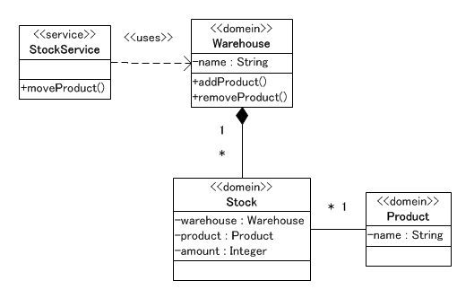
(Java 実装例)
package mycom.domain;
import java.util.List;
import javax.persistence.Entity;
import javax.persistence.OneToMany;
import mycom.domain.ddb.DdBaseEntity;
/**
* 製品
*/
@Entity
public class Product extends DdBaseEntity {
/** 製品名 */
private String name;
/** 在庫リスト */
@OneToMany(mappedBy="product")
private List<Stock> stockList;
/** コンストラクタ */
public Product() {
super();
this.name = "";
}
public String getName() {
return name;
}
public void setName(String name) {
this.name = name;
}
public List<Stock> getStockList() {
return stockList;
}
public void setStockList(List<Stock> stockList) {
this.stockList = stockList;
}
@Override
public String getDDBEntityTitle() {
return "タイトル: " + this.getName();
}
}
package mycom.domain;
import java.util.List;
import javax.persistence.CascadeType;
import javax.persistence.Entity;
import javax.persistence.OneToMany;
import mycom.domain.ddb.DdBaseEntity;
/**
* 倉庫
*/
@Entity
public class Warehouse extends DdBaseEntity {
/** 倉庫名 */
private String name;
/** 在庫リスト */
@OneToMany(mappedBy="warehouse", cascade=CascadeType.ALL, orphanRemoval=true)
private List<Stock> stockList;
/** コンストラクタ */
public Warehouse() {
super();
}
public String getName() {
return name;
}
public void setName(String name) {
this.name = name;
}
public List<Stock> getStockList() {
return stockList;
}
public void setStockList(List<Stock> stockList) {
this.stockList = stockList;
}
@Override
public String getDDBEntityTitle() {
return "タイトル: " + this.getName();
}
}
package mycom.domain;
import javax.persistence.Entity;
import javax.persistence.ManyToOne;
import mycom.domain.ddb.DdBaseEntity;
/**
* 在庫
*/
@Entity
public class Stock extends DdBaseEntity {
/** 倉庫 */
@ManyToOne
private Warehouse warehouse;
/** 商品 */
@ManyToOne
private Product product;
/** 数量 */
private Integer amount;
public Stock() {
super();
}
public Warehouse getWarehouse() {
return warehouse;
}
public void setWarehouse(Warehouse warehouse) {
this.warehouse = warehouse;
}
public Product getProduct() {
return product;
}
public void setProduct(Product product) {
this.product = product;
}
public Integer getAmount() {
return amount;
}
public void setAmount(Integer amount) {
this.amount = amount;
}
@Override
public String getDDBEntityTitle() {
String title = this.getProduct() != null ? this.getProduct().getName() : "";
return "タイトル: " + title;
}
}
package mycom.service;
import mycom.domain.Product;
import mycom.domain.Warehouse;
import mycom.service.ddb.DdBaseService;
/**
* 在庫サービス
*/
public class StockService extends DdBaseService {
/**
* 倉庫間移動
* @param from
* @param to
* @param product
* @param amount
* @return
*/
public String moveProduct(
Warehouse from,
Warehouse to,
Product product,
Integer amount
){
//実際の移動処理は未実装です。
String result = "完了。"
+ from.getName() + " → "
+ to.getName()
+ " 商品: " + product.getName() + " 数量: " + amount;
return result;
}
}
なお、このドメインモデルは、自動生成機能を説明することが目的のため、ドメインモデルらしい振る舞い等は含んでいません。つまり、DDDとしては推奨されない、ドメインモデル貧血の状態であることに注意してください。
画面例
EclipseにインポートしたWebアプリケーションを起動します。以下は、そのWebアプリケーションに、Chromeブラウザからアクセスした時の画面です。
[ホーム画面]
http://localhost:8080/myapp/ にアクセスします。(myapp は DDBuilderの操作画面で指定したアプリケーションの名前です)
ホーム画面として、3つのボタンを持つ画面が表示されます。
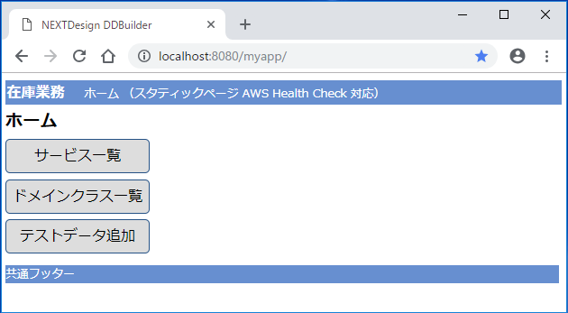
例えば、ドメインクラス一覧ボタンをクリックすると、次のようなドメインクラス一覧画面が表示されます。
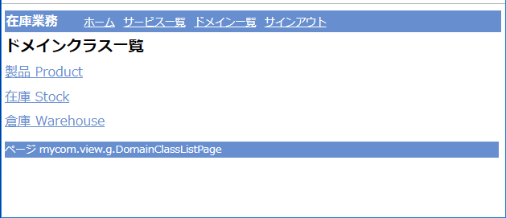
ここで、製品 Product 等のリンクをクリックすると、当該クラスのインスタンスの追加、更新、削除ができる画面が表示されます。
所謂、マスターメンテナンス画面のような操作ができます。
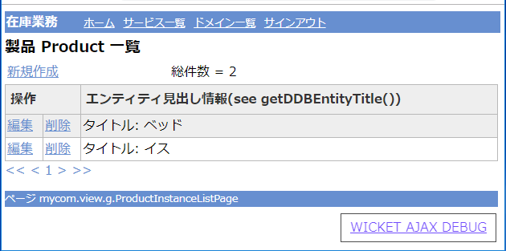
次画面は、製品「イス」の「編集」リンクをクリックして、製品名を「ソファ」に変更している例です。
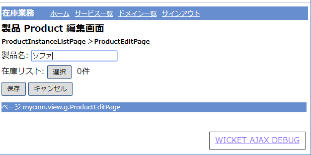
ホーム画面でサービス一覧ボタンをクリックすると、サービスメソッド一覧画面が表示されます。
定義されているサービスメソッドの一覧が表示されます。
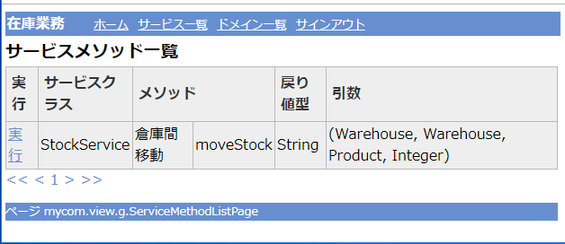
上の画面の「実行」リンクをクリックすると、サービスメソッドの実行画面が表示されます。
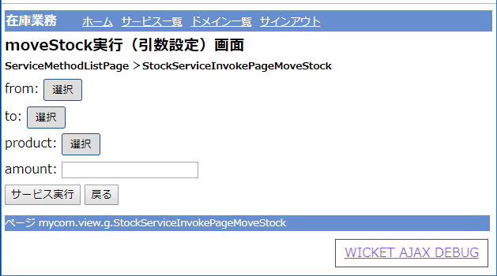
ここで、サービスメソッドに渡す引数を指定します。
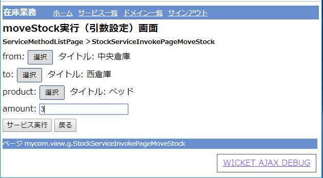
次に、サービス実行ボタンを押下すると、サービスメソッドが実行されて、結果が表示されます。
このサービスメソッドは、結果を無条件にString型で返却しているだけです。
下の画面の「完了。中央倉庫 → 西倉庫…」の部分が実行結果です。
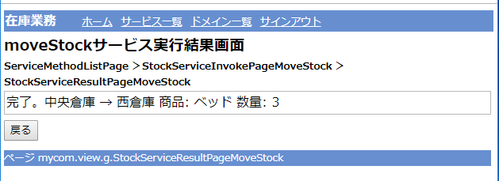
(補足)
上の例では、最初にテスト用のデータ (インスタンス) が登録されています。(ベッド、イス、中央倉庫、西倉庫)
自動生成しただけでは、テスト用のデータは準備されません。
最初にテストデータを準備したい場合は、サービス層の (自動生成されている) TestDataService.java の処理内容を編集してください。
mycom.service.g.TestDataService.java のメソッドを下のソースコードと同じにします。
(テストデータ登録サービスクラス)
/*
* DDBuilder2.1が生成したファイルです。 [生成日時 2018/11/25-14:39:19]
*/
package mycom.service.g;
import java.text.SimpleDateFormat;
import java.util.Calendar;
import mycom.domain.Product;
import mycom.domain.Stock;
import mycom.domain.Warehouse;
import mycom.domain.g.DdProductManager;
import mycom.domain.g.DdStockManager;
import mycom.domain.g.DdWarehouseManager;
import mycom.service.ddb.DdBaseService;
/**
* テスト用データを作成するサービス
* このクラスはDDBuilderによって上書きされません。存在しない場合のみ新規作成します。
* Service for creating test data.
* This class is not overwritten by DDBuilder. It will only be created if it does not exist.
*
*/
public class TestDataService extends DdBaseService{
public void addTestData(int count){
try {
startService();
begin();
/*
必要な場合は、ここにテスト用データを作成するためのコードを書きます。
ホームページの「テストデータ追加」ボタンを押下するとこのメソッドが実行されます。
以下はテストデータとして、書籍クラスのインスタンスを1つ作成するためのサンプルコードです。
If necessary, write code to create test data here.
This method is executed when you click "add test data" button on the homepage.
The following is a sample code for creating one instance of the book class as test data.
*/
DdWarehouseManager warehouseManager = new DdWarehouseManager();
Warehouse warehouse1 = new Warehouse();
warehouse1.setName("中央倉庫");
warehouseManager.persist(warehouse1);
Warehouse warehouse2 = new Warehouse();
warehouse2.setName("西倉庫");
warehouseManager.persist(warehouse2);
DdProductManager productManager = new DdProductManager();
Product product1 = new Product();
product1.setName("ベッド");
productManager.persist(product1);
Product product2 = new Product();
product2.setName("イス");
productManager.persist(product2);
DdStockManager stockManager = new DdStockManager();
Stock stock1 = new Stock();
stock1.setWarehouse(warehouse1);
stock1.setProduct(product1);
stock1.setAmount(10);
stockManager.persist(stock1);
Stock stock2 = new Stock();
stock2.setWarehouse(warehouse2);
stock2.setProduct(product2);
stock1.setAmount(20);
stockManager.persist(stock2);
commit();
} catch (Exception e) {
rollback();
} finally {
endService();
}
}
}
TestDataService.java を編集したら、Web アプリケーションを起動して、ブラウザでアクセスします。
ホーム画面の「テストデータ追加」ボタンを押下すると、このサービスが実行され、テストデータが登録されます。
もしもホーム画面の「テストデータ追加」でIDとパスワードを求められた場合は、IDとパスワードともに「aaa」でログインできます。
なお、Eclipseへのインポートや起動方法の詳細は「DDBuilderを使った開発の流れ」を参照してください。
[目次に戻る]自動生成の詳細
フォルダ構成
DDBuilderは、ドメインモデルのJava実装コードを読み込み、Webアプリケーションを生成します。 ユーザが実装したドメインモデルは、Webアプリケーションのドメイン層にに置かれます。 DDBuilderは、ドメインモデルからビュー層や永続化層を生成します。
生成結果は、1つのフォルダに出力され、そのフォルダは、そのままEclipse にインポートできます。 つまり、出力フォルダは「Eclipse 動的 Web プロジェクト」の構成になっています。 下図は、出力フォルダの内容です。
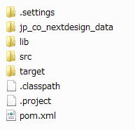
.settings, .classpath, .project は Eclipse の設定ファイルです。src フォルダ配下に、domain, persistence, service, viewパッケージフォルダがあります。lib フォルダの配下には、必要な OSS のライブラリが含まれています。
レイヤ構成
下図は、DDBuilderが自動生成する Java Web アプリケーションの構成図です。DDD本 (p.70) のレイヤ化アーキテクチャに準じています。
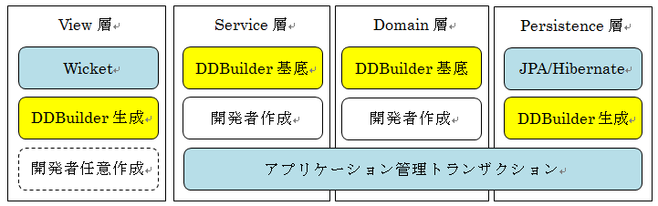
次のオープンソースソフトウェアを使用しています。
・ビュー層：Apache Wicket
・永続化層 (インフラストラクチャ層)：Java EE JPA / Hibernate
レイヤ名について
DDD本では、ユーザインタフェース層 (プレゼンテーション層)、アプリケーション層、ドメイン層 (モデル層)、インフラストラクチャ層と命名されています。
[目次に戻る]自動生成されるクラス
開発者が実装するドメインクラス (エンティティ) と、DDBuilderが自動生成するクラスについて説明します。例として、開発者が Product.javaというドメインクラス (下図の黄色の網掛けのクラス) を作成します。次に、DDBuilderで自動生成を実行すると、下図ようなクラス (Javaファイル) とHTMLファイルが自動生成されます。下図は、すべてではなく、主なファイルです。 view, service, domain, persistenceはパッケージ名です。それぞれ、ビュー層、サービス層、ドメイン層、永続化層に相当します。開発者が Product.javaを実装すれば、ビュー層、永続化層のクラスは自動的に生成されます。自動生成されたものは、そのまま Java Webアプリケーションとして動作します。Productの登録、更新、削除、一覧がWeb画面で操作できます。
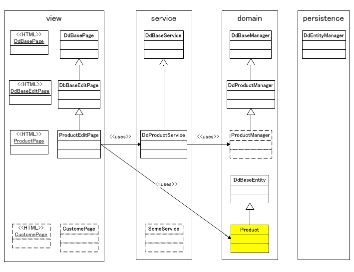
ビュー層の1つの画面は、同名のHTMLファイルとJavaクラスで構成されます。
例: ProductPage.htmlとProductPage.java。
これは、ビュー層で使用している Apache Wicket フレームワークの仕様です。Wicketは、JSP/Struts系のアーキテクチャではなく、Jave EE JSF 系のアーキテクチャです。HTMLファイルは独立しており、通常のHTMLと同様に編集できます。つまり、JavaやJSPなどの知識が不要なので、デザイン専門の方でも編集できます。Wicketでは、画面は、完全に Java オブジェクト指向プログラミングで実装できます。例えば、Productを使用するサービスが必要になった場合は、上図のSomeService.javaのように追加できます。もちろん、サービス名は適切な名前を付けます。数は制約されません。自動生成された画面だけでは不足する場合は、画面を追加できます。(上図では、CustomePage) 自動生成を再度実行しても、SomeServiceやCustomePageは上書きされません。詳しくは、「DDBuilderを使った開発の流れ」を参照ください。
[目次に戻る]使用できる関連のタイプと属性型
このセクションでは、DDBuilderがサポートする関連の種類と、インスタンス属性型を示します。
この例では、JPAアノテーションを使って、エンティティ間の関連を定義しています。ただし、必ずしもJPAアノテーションを使って定義する必要はありません。というのは、実際のドメインモデリングでは、決定的に関連を決めることが大変難しい場合もあるからです。もちろん、関連を確実に定義できるところは、この例のように実装して、あいまいさが残る部分は、JPQLやネイティブSQLを使って、関連を実装することも検討すべきです。
UMLクラス図
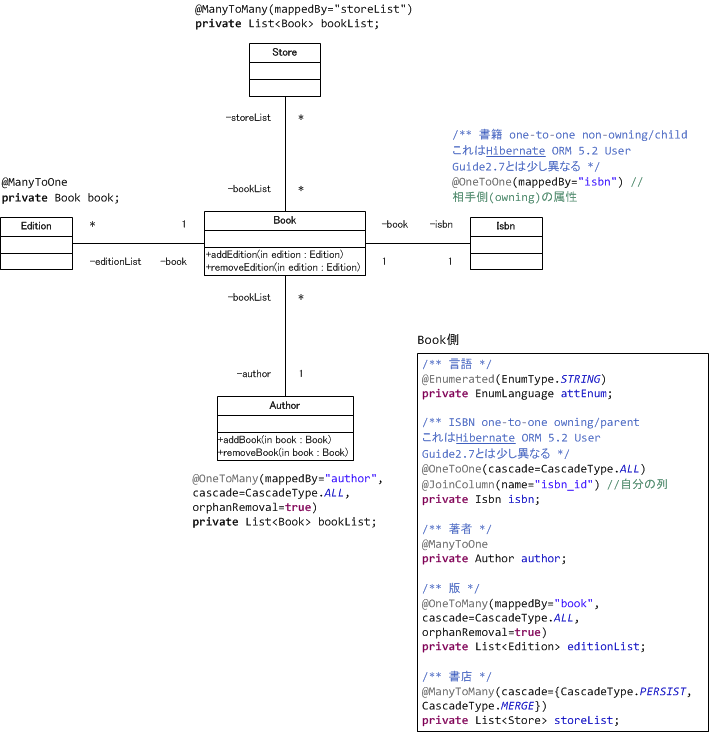
サンプル コードには次の5つのクラスが含まれています。
(1) 著者 @Entity
public class Author extends DdBaseEntity
(2) 書籍 @Entity
public class Book extends DdBaseEntity
(3) 版 @Entity
public class Edition extends DdBaseEntity
(4) ISBN @Entity
public class Isbn extends DdBaseEntity
(5) 書店 @Entity
public class Store extends DdBaseEntity
関連タイプと属性型の Java サンプルコード
/*
* DDBuilderで使える関連タイプと属性型に関する例です。DDD的な観点の例ではありません。
*/
package jp.co.nextdesign.domain;
import java.util.ArrayList;
import java.util.List;
import javax.persistence.CascadeType;
import javax.persistence.Entity;
import javax.persistence.OneToMany;
import javax.persistence.Transient;
import jp.co.nextdesign.domain.ddb.DdBaseEntity;
/**
* 著者
*/
@Entity
public class Author extends DdBaseEntity {
private static final long serialVersionUID = 1L;
/** 名前 */
private String name;
/** 書籍リスト owning/parent */
@OneToMany(mappedBy="author", cascade=CascadeType.ALL, orphanRemoval=true)
private List<Book> bookList;
/** 書籍リスト owning/parent */
@OneToMany(mappedBy="author2", cascade=CascadeType.ALL, orphanRemoval=true)
private List<Book> bookList2;
/** コンストラクタ */
public Author(){
super();
this.name = "---";
this.bookList = new ArrayList<Book>();
this.bookList2 = new ArrayList<Book>();
}
//OneToManyで双方向関連を維持するためのコードを含むgetBookList(),
//setBookList(List<Book> bookList)の例
@Transient
private ArrayList<Book> latestBookList = new ArrayList<Book>();
public List<Book> getBookList() {
return this.bookList;
}
public void setBookList(List<Book> bookList) {
for(Book newBook : bookList){
if (!latestBookList.contains(newBook)){
newBook.setAuthor(this);
}
}
for(Book oldBook : latestBookList){
if (!bookList.contains(oldBook)){
oldBook.setAuthor(null);
}
}
this.bookList = bookList;
latestBookList = new ArrayList<Book>(this.bookList);
}
public String getName() {
return name;
}
public void setName(String name) {
this.name = name;
}
public List<Book> getBookList2() {
return bookList2;
}
public void setBookList2(List<Book> bookList2) {
this.bookList2 = bookList2;
}
@Override
public String getDDBEntityTitle(){
return this.name;
}
/** debug */
public String getDebugInfo(){
String info = "<" + this.getClass().getSimpleName() + ">";
info += "\nname=" + this.getName();
info += "\n</" + this.getClass().getSimpleName() + ">";
return info;
}
}
package jp.co.nextdesign.domain;
import java.math.BigDecimal;
import java.util.ArrayList;
import java.util.Date;
import java.util.List;
import javax.persistence.CascadeType;
import javax.persistence.Entity;
import javax.persistence.EnumType;
import javax.persistence.Enumerated;
import javax.persistence.FetchType;
import javax.persistence.JoinColumn;
import javax.persistence.ManyToMany;
import javax.persistence.ManyToOne;
import javax.persistence.OneToMany;
import javax.persistence.OneToOne;
import javax.persistence.Transient;
import jp.co.nextdesign.domain.ddb.DdBaseEntity;
import jp.co.nextdesign.domain.store.Store;
/**
* 書籍
*/
@Entity
public class Book extends DdBaseEntity {
private static final long serialVersionUID = 1L;
/** 書名 */
private String name;
/** 書名2 */
private String name2;
/** 出版日 */
private Date publishedAt;
/** 出版日2 */
private Date publishedAt2;
/** 仕入価格 */
private BigDecimal cost;
/** 仕入価格2 */
private BigDecimal cost2;
/** キャンペーン1 isなし */
private Boolean campaign1;
/** キャンペーン12 isなし */
private Boolean campaign12;
/** キャンペーン2 is付き */
private Boolean isCampaign2;
/** キャンペーン22 is付き */
private Boolean isCampaign22;
/** 言語 */
@Enumerated(EnumType.STRING)
private EnumLanguage attEnum;
/** 言語2 */
@Enumerated(EnumType.STRING)
private EnumLanguage attEnum2;
/** ISBN one-to-one owning/parent Hibernate ORM 5.2 User Guide2.7と異なる */
@OneToOne(cascade=CascadeType.ALL)
@JoinColumn(name="isbn_id") //自分の列
private Isbn isbn;
/** ISBN2 one-to-one owning/parent Hibernate ORM 5.2 User Guide2.7と異なる */
@OneToOne(cascade=CascadeType.ALL)
@JoinColumn(name="isbn_id2") //自分の列
private Isbn isbn2;
/** 著者 */
@ManyToOne
private Author author;
/** 著者2 */
@ManyToOne
private Author author2;
/** 版 */
@OneToMany(mappedBy="book", cascade=CascadeType.ALL, orphanRemoval=true)
private List<Edition> editionList;
/** 版2 */
@OneToMany(mappedBy="book2", cascade=CascadeType.ALL, orphanRemoval=true)
private List<Edition> editionList2;
/**
* 書店
* Book編集画面で関連付ける書店を選択／解除しても書店側には反映されない。
* setStoreList, getStoreListを参照。
* 同期反映させるにはaddStore/removeStoreを使うかまたは、ManyToManyを
* 2つのOneToManyで定義する。
* Hibernate ORM 5.2 User Guide2.7.2 Bidirectional ManyToMany参照
*/
@ManyToMany(cascade={CascadeType.PERSIST, CascadeType.MERGE}, fetch=FetchType.EAGER)
private List<Store> storeList;
/** 書店2
* BookとStoreの間に2つのManyToManyを定義すると、
* 次のようなBook_Storeテーブルが作成される。
* このテーブルにinsertするためには、4つのxxxx_idが全てnot nullに限られるので、
* insert時に（常に）例外が発生する。
* 同じエンティティ間で複数のMantToMany関連を定義したい場合は
* @JoinTableを使用する必要があると思われる。
* ここでは未確認。
* create table Book_Store (
* bookList2_id bigint not null,
* storeList2_id bigint not null,
* bookList_id bigint not null,
* storeList_id bigint not null
* )
*/
// @ManyToMany(cascade={CascadeType.PERSIST, CascadeType.MERGE})
// private List<Store> storeList2;
/** Integer型属性名 */
private Integer integerAttribute;
/** Integer型属性名2 */
private Integer integerAttribute2;
/** Byte型属性名 */
private Byte attByte;
/** Byte型属性名2 */
private Byte attByte2;
/** Short型属性名 */
private Short attShort;
/** Short型属性名2 */
private Short attShort2;
/** Long型属性名 */
private Long attLong;
/** Long型属性名2 */
private Long attLong2;
/** Float型属性名 */
private Float attFloat;
/** Float型属性名2 */
private Float attFloat2;
/** Double型属性名 */
private Double attDouble;
/** Double型属性名2 */
private Double attDouble2;
/** Character型属性名 */
private Character attCharacter;
/** Character型属性名2 */
private Character attCharacter2;
/** コンストラクタ */
public Book(){
super();
this.name = "";
this.storeList = new ArrayList<Store>();
// this.storeList2 = new ArrayList<Store>();
this.editionList = new ArrayList<Edition>();
this.editionList2 = new ArrayList<Edition>();
}
//ManyToManyで双方向関連を維持するためのaddStore,removeStoreを含む。
//owning側ではなくmappedBy側から使用するが、両側に実装する。
public List<Store> getStoreList() {
return storeList;
}
public void setStoreList(List<Store> storeList) {
this.storeList = storeList;
}
public void addStore(Store store){
if (store != null && !this.storeList.contains(store)){
this.storeList.add(store);
store.addBook(this);
}
}
public void removeStore(Store store){
if (store != null && this.storeList.contains(store)){
this.storeList.remove(store);
store.removeBook(this);
}
}
//OneToManyで双方向関連を維持するためのコードを含むgetEditionList(),
//setEditionList(List<Edition> editionList)の例
@Transient
private ArrayList<Edition> latestEditionList = new ArrayList<Edition>();
public List<Edition> getEditionList() {
return this.editionList;
}
public void setEditionList(List<Edition> editionList) {
for(Edition newEdition : editionList){
if (!latestEditionList.contains(newEdition)){
newEdition.setBook(this);
}
}
for(Edition oldEdition : latestEditionList){
if (!editionList.contains(oldEdition)){
oldEdition.setBook(null);
}
}
this.editionList = editionList;
latestEditionList = new ArrayList<Edition>(this.editionList);
}
/** DDBのviewが使用する */
@Override
public String getDDBEntityTitle(){
String result = this.getName();
result += this.getAuthor() != null ? this.getAuthor().getName() : "";
return result;
}
// public List<Store> getStoreList2() {
// return storeList2;
// }
// public void setStoreList2(List<Store> storeList2) {
// this.storeList2 = storeList2;
// }
public Isbn getIsbn() {
return isbn;
}
public void setIsbn(Isbn isbn) {
this.isbn = isbn;
}
public String getName() {
return name;
}
public void setName(String name) {
this.name = name;
}
public Author getAuthor() {
return author;
}
public void setAuthor(Author author) {
this.author = author;
}
public Date getPublishedAt() {
return publishedAt;
}
public void setPublishedAt(Date publishedAt) {
this.publishedAt = publishedAt;
}
//Eclipseのgetter/setter自動生成では(booleanではなく
//Booleanの場合)is名前形式のgetterは生成されない。
//Wicket はis名前形式のgetter以外にget名前形式でもよい。
public Boolean getCampaign1() {
return campaign1;
}
public void setCampaign1(Boolean campaign1) {
this.campaign1 = campaign1;
}
public Boolean getIsCampaign2() {
return isCampaign2;
}
public void setIsCampaign2(Boolean isCampaign2) {
this.isCampaign2 = isCampaign2;
}
public Byte getAttByte() {
return attByte;
}
public void setAttByte(Byte attByte) {
this.attByte = attByte;
}
public Short getAttShort() {
return attShort;
}
public void setAttShort(Short attShort) {
this.attShort = attShort;
}
public Integer getIntegerAttribute() {
return integerAttribute;
}
public void setIntegerAttribute(Integer integerAttribute) {
this.integerAttribute = integerAttribute;
}
public Long getAttLong() {
return attLong;
}
public void setAttLong(Long attLong) {
this.attLong = attLong;
}
public Float getAttFloat() {
return attFloat;
}
public void setAttFloat(Float attFloat) {
this.attFloat = attFloat;
}
public Double getAttDouble() {
return attDouble;
}
public void setAttDouble(Double attDouble) {
this.attDouble = attDouble;
}
public Character getAttCharacter() {
return attCharacter;
}
public void setAttCharacter(Character attCharacter) {
this.attCharacter = attCharacter;
}
public EnumLanguage getAttEnum() {
return attEnum;
}
public void setAttEnum(EnumLanguage attEnum) {
this.attEnum = attEnum;
}
/** debug用 */
public void debugPrint(){
String info = "<" + this.getClass().getSimpleName() + ">";
info += "\nname=" + this.getName();
info += "\npublishedAt=" + this.getPublishedAt();
if(this.author != null) info += "\n" + this.getAuthor().getDebugInfo();
if(this.isbn != null) info += "\n" + this.getIsbn().getDebugInfo();
for(Edition edition : this.getEditionList()){
info += "\n" + edition.getDebugInfo();
}
for(Store bookStore : this.getStoreList()){
info += "\n" + bookStore.getDebugInfo();
}
info += "\n</" + this.getClass().getSimpleName() + ">";
System.out.println("--------------------------------------");
System.out.println(info);
System.out.println("--------------------------------------");
}
public String getName2() {
return name2;
}
public void setName2(String name2) {
this.name2 = name2;
}
public Date getPublishedAt2() {
return publishedAt2;
}
public void setPublishedAt2(Date publishedAt2) {
this.publishedAt2 = publishedAt2;
}
public Boolean getCampaign12() {
return campaign12;
}
public void setCampaign12(Boolean campaign12) {
this.campaign12 = campaign12;
}
public Boolean getIsCampaign22() {
return isCampaign22;
}
public void setIsCampaign22(Boolean isCampaign22) {
this.isCampaign22 = isCampaign22;
}
public EnumLanguage getAttEnum2() {
return attEnum2;
}
public void setAttEnum2(EnumLanguage attEnum2) {
this.attEnum2 = attEnum2;
}
public Isbn getIsbn2() {
return isbn2;
}
public void setIsbn2(Isbn isbn2) {
this.isbn2 = isbn2;
}
public Author getAuthor2() {
return author2;
}
public void setAuthor2(Author author2) {
this.author2 = author2;
}
public List<Edition> getEditionList2() {
return editionList2;
}
public void setEditionList2(List<Edition> editionList2) {
this.editionList2 = editionList2;
}
// public List<Store> getStoreList2() {
// return storeList2;
// }
// public void setStoreList2(List<Store> storeList2) {
// this.storeList2 = storeList2;
// }
public Integer getIntegerAttribute2() {
return integerAttribute2;
}
public void setIntegerAttribute2(Integer integerAttribute2) {
this.integerAttribute2 = integerAttribute2;
}
public Byte getAttByte2() {
return attByte2;
}
public void setAttByte2(Byte attByte2) {
this.attByte2 = attByte2;
}
public Short getAttShort2() {
return attShort2;
}
public void setAttShort2(Short attShort2) {
this.attShort2 = attShort2;
}
public Long getAttLong2() {
return attLong2;
}
public void setAttLong2(Long attLong2) {
this.attLong2 = attLong2;
}
public Float getAttFloat2() {
return attFloat2;
}
public void setAttFloat2(Float attFloat2) {
this.attFloat2 = attFloat2;
}
public Double getAttDouble2() {
return attDouble2;
}
public void setAttDouble2(Double attDouble2) {
this.attDouble2 = attDouble2;
}
public Character getAttCharacter2() {
return attCharacter2;
}
public void setAttCharacter2(Character attCharacter2) {
this.attCharacter2 = attCharacter2;
}
public BigDecimal getCost() {
return cost;
}
public void setCost(BigDecimal cost) {
this.cost = cost;
}
public BigDecimal getCost2() {
return cost2;
}
public void setCost2(BigDecimal cost2) {
this.cost2 = cost2;
}
//setStoreList,getStoreList,setEditionList,getEditionListに
//対策コードを追加したので以下は使用しない。
// /*
// * getter/setterに加えて、このメソッドを追加する理由
// * OneToManyの関連に関連先を追加するためには、
// * book.getEditionList().add(newEdition)として、persist(book)としても追加されない。
// * newEdition.setBook(book)としてから、persist(book)しなければならない。
// * ただ、シーケンスとしてbook側を変更するだけにしたい場合もあるので、
// * 以下のようなaddEdition(newEdition)を実装した。
// * ただし、双方向維持のための常套コードのように
// * edition.setBook(book)からbook.addEdition(edition)とすると、
// * 復元時に"復元中にコレクションが変更された"という例外が発生するので、
// * edition.setBook(book)からbook.addEdition(edition)は使用しないようにした。
// */
// public void addEdition(Edition edition){
//// if(edition!=null && !this.editionList.contains(edition)){
//// edition.setBook(this);
//// this.editionList.add(edition);
//// }
// //Hibernate ORM 5.2 User Guide2.7.2 Bidirectional @OneToMany 例を参考
// this.editionList.add(edition);
// edition.setBook(this);
// }
//
// /**
// * Hibernate ORM 5.2 User Guide2.7.2 Bidirectionaln@OneToMany 例を参考
// * @param edition
// */
// public void removeEdition(Edition edition){
// this.editionList.remove(edition);
// edition.setBook(null);
// }
//
// /**
// * ManyToManyのowning sideなので自分のリストのみ更新する。
// * Store（mappedBy側）との間でaddBookから折り返すと復元時に
// * "復元中にコレクションが変更された"例外が発生すると思われる
// */
// public void addStore(Store store){
// //Hibernate ORM 5.2 User Guide2.7.2 Bidirectionaln@ManyToManyでは
// //Store（mappedBy側）にHelperメソッドは無い。
//// if (store != null && !this.storeList.contains(store)){
//// this.storeList.add(store);
//// }
// this.storeList.add(store);
// store.getBookList().add(this);
// }
//
// /**
// * 双方向関連を整合させるためのアプリケーションコード
// */
// public void removeStore(Store store){
// this.storeList.remove(store);
// store.getBookList().remove(this);
// }
}
package jp.co.nextdesign.domain;
import javax.persistence.Entity;
import javax.persistence.ManyToOne;
import jp.co.nextdesign.domain.ddb.DdBaseEntity;
/**
* 版
*/
@Entity
public class Edition extends DdBaseEntity {
private static final long serialVersionUID = 1L;
/** 版番号 */
private Integer editionNumber;
/** 版名 */
private String name;
/** 書籍 */
@ManyToOne
//@JoinColumn(name="book_id") //省略可
private Book book;
/** 書籍 */
@ManyToOne
//@JoinColumn(name="book_id") //省略可
private Book book2;
public Edition(){
super();
}
public String getName() {
return name;
}
public void setName(String name) {
this.name = name;
}
public Integer getEditionNumber() {
return editionNumber;
}
public void setEditionNumber(Integer editionNumber) {
this.editionNumber = editionNumber;
}
public Book getBook() {
return book;
}
//Book#addEdition,removeEditionから使用する
public void setBook(Book book) {
this.book = book;
}
public Book getBook2() {
return book2;
}
public void setBook2(Book book2) {
this.book2 = book2;
}
@Override
public String getDDBEntityTitle(){
return this.name;
}
/** debug */
public String getDebugInfo(){
String info = "<" + this.getClass().getSimpleName() + ">";
info += "\neditionNumber=" + this.getEditionNumber();
info += "\n</" + this.getClass().getSimpleName() + ">";
return info;
}
}
package jp.co.nextdesign.domain;
public enum EnumLanguage {
JA("日本語"),
EN("英語");
private String fullName;
private EnumLanguage(String fullName){
this.fullName = fullName;
}
@Override
public String toString(){
return this.fullName;
}
}
package jp.co.nextdesign.domain;
import java.util.Date;
import javax.persistence.CascadeType;
import javax.persistence.Entity;
import javax.persistence.JoinColumn;
import javax.persistence.OneToOne;
import jp.co.nextdesign.domain.ddb.DdBaseEntity;
/**
* ISBN
*/
@Entity
public class Isbn extends DdBaseEntity {
private static final long serialVersionUID = 1L;
/** 書籍 one-to-one non-owning/child Hibernate ORM 5.2 User Guide2.7と異なる */
@OneToOne(mappedBy="isbn") //相手側(owning)の属性
private Book book;
/** 書籍 one-to-one non-owning/child Hibernate ORM 5.2 User Guide2.7と異なる */
@OneToOne(mappedBy="isbn2") //相手側(owning)の属性
private Book book2;
/** グループ記号 */
private String groupCode;
/** 出版社記号 */
private Integer publisherCode;
/** 書名記号 */
private String itemCode;
/** チェックディジット */
private String checkDigit;
/** 決定日 */
private Date determinatedAt;
/** 旧ISBN */
private Boolean isOldIsbn;
/** コンストラクタ */
public Isbn(){
super();
}
public Book getBook() {
return book;
}
public void setBook(Book book) {
this.book = book;
}
public Book getBook2() {
return book2;
}
public void setBook2(Book book2) {
this.book2 = book2;
}
public String getGroupCode() {
return groupCode;
}
public void setGroupCode(String groupCode) {
this.groupCode = groupCode;
}
public Integer getPublisherCode() {
return publisherCode;
}
public void setPublisherCode(Integer publisherCode) {
this.publisherCode = publisherCode;
}
public String getItemCode() {
return itemCode;
}
public void setItemCode(String itemCode) {
this.itemCode = itemCode;
}
public String getCheckDigit() {
return checkDigit;
}
public void setCheckDigit(String checkDigit) {
this.checkDigit = checkDigit;
}
public Date getDeterminatedAt() {
return determinatedAt;
}
public void setDeterminatedAt(Date determinatedAt) {
this.determinatedAt = determinatedAt;
}
public Boolean getIsOldIsbn() {
return isOldIsbn;
}
public void setIsOldIsbn(Boolean isOldIsbn) {
this.isOldIsbn = isOldIsbn;
}
@Override
public String getDDBEntityTitle(){
return "ISBN" + this.getGroupCode() + "-"
+ this.getPublisherCode() + "-" + this.getItemCode();
}
/** debug */
public String getDebugInfo(){
String info = "<" + this.getClass().getSimpleName() + ">";
info += "\ngroupCode=" + this.getGroupCode();
info += "\npublisherCode=" + this.getPublisherCode();
info += "\nitemNumber=" + this.getItemCode();
info += "\n</" + this.getClass().getSimpleName() + ">";
return info;
}
}
package jp.co.nextdesign.domain.store;
import java.util.ArrayList;
import java.util.List;
import javax.persistence.Entity;
import javax.persistence.FetchType;
import javax.persistence.ManyToMany;
import jp.co.nextdesign.domain.Book;
import jp.co.nextdesign.domain.ddb.DdBaseEntity;
/**
* 書店
*/
@Entity
public class Store extends DdBaseEntity {
private static final long serialVersionUID = 1L;
/** 書店名 */
private String name;
/** 書籍リスト */
@ManyToMany(mappedBy="storeList", fetch=FetchType.EAGER)
private List<Book> bookList;
// /** 書籍リスト Book側のコメントを参照 */
// @ManyToMany(mappedBy="storeList2")
// private List<Book> bookList2;
/** コンストラクタ */
public Store(){
super();
this.name = "";
this.bookList = new ArrayList<Book>();
// this.bookList2 = new ArrayList<Book>();
}
/** DDBのviewが使用する */
@Override
public String getDDBEntityTitle(){
return this.name;
}
//ManyToManyで双方向関連を維持するためのaddStore,removeStoreを含む。
//owning側ではなくmappedBy側から使用するが、両側に実装する。
public List<Book> getBookList() {
return bookList;
}
public void setBookList(List<Book> bookList) {
this.bookList = bookList;
}
public void addBook(Book book){
if (book != null && !this.bookList.contains(book)){
this.bookList.add(book);
book.addStore(this);
}
}
public void removeBook(Book book){
if (book != null && this.bookList.contains(book)){
this.bookList.remove(book);
book.removeStore(this);
}
}secti
public String getName() {
return name;
}
public void setName(String name) {
this.name = name;
}
/** debug */
public String getDebugInfo(){
String info = "<" + this.getClass().getSimpleName() + ">";
info += "\nname=" + this.getName();
info += "\n</" + this.getClass().getSimpleName() + ">";
return info;
}
}
【注意】
この例は、DDBuilderがサポートする属性型と関連の型を示すためのものです。そのため、DDDのドメインモデルとしての重要な責務 (メソッド) は省略しています。
【注意】
このサンプルモデルはシンプルですが、現実には、集約 (AGGREGATES) についても注意深くモデリングする必要があります。JPAのアノテーションを使って、すべての関連を実現しようとしないことです。JPQLやネイティブSQLを使って、関連を実装することも検討すべきです。
※引用：ここから (DDD本 p.123)
関係を最小限に抑えるように設計することにより、 関連を辿る処理は単純化され、 関係性の爆発的増加もある程度は制限される。 しかし、ほとんどのビジネスドメインは非常に強く相互に結びついているので、 結局はオブジェクトの参照を通じて、長くて深い経路を辿ることになる。 ある意味で、こうしたもつれはこの世界の現実を反映している。 現実には、はっきりした境界が引いてもらえることはめったにないのだ。 これはソフトウェアの設計における問題である。
※引用：ここまで (DDD本 p.123)
自作ページの追加
自動生成されたWebアプリケーションに自作のページを追加できます。
DDBuilderは、自作ページを上書きしません。
ページを自作する場合には、自動生成されたコードが参考になるはずです。
より複雑なページの例も本サイト内で公開しています。
・ページサンプル : Wicket DataTable ソート列 アクション列 テーブル
・ページサンプル : 改ページ付き・ソート列付き・1件複数行対応 テーブル
[目次に戻る]利点・特徴
DDBuilder へのロックインなし
開発チームは、DDBuilderにロックインされる (しばられる) ことはありません。いつでもDDBuilderを切り離す (使用をやめる) ことができます。切り離した後は、WicketとHibernateを使ったシンプルな Java Webアプリケーションとして開発や保守を継続できます。あるいは、ドメインモデル層とサービス層を他のアプリケーションフレームワークに移植することもあるでしょう。
[目次に戻る]Javaの利点
Java は、強い静的型付けのオブジェクト指向言語です。
DDBuilder では、ドメインモデルの実装言語は Java です。
自動生成されるアプリケーションも Java Webアプリケーションです。
Java は静的型付け言語なので、Eclipseなどのリファクタリング機能を使って安全に変更できます。
このことは、ドメインモデルを繰り返しリファクタリングしていくうえで、強力な利点です。
また、ドメインモデルを他の言語や他のフレームワークへ移植する場合にも、元の言語が Java であれば、より安全に移植できるでしょう。
[目次に戻る]Apache Wicketの利点
自動生成されるアプリケーションのビュー層には、Wicketを使用します。Wicketは、ビュー層を担う Java Web アプリケーションフレームワークです。Struts系と違い、 オブジェクト指向プログラミングモデルを前提としたフレームワークです。HTMLとの独立性が高く、基本的にすべてをJavaコードで実装します。開発者が Wicketを意識するのは、自作ページを追加するときです。
[目次に戻る]Java EE JPAの利点
自動生成されるアプリケーションの永続化層には、Hibernateを使用します。Hibernateは、JavaEE JPA実装の1つです。自動生成されるアプリケーションでは、特に指定がなければ、データベースとして、Java標準のJavaDBを使用します。なお、Hibernateは、PostgreSQL, MySQL, Oracle, SQLServer, DB2などの代表的なDBMSをサポートしています。なので、DDBuilderが自動生成したWebアプリケーションでも、設定ファイルを変更するだけでDBMSを変更できます。ドメインモデル層のクラスを実装するときには、JPA / Hibernate の知識が必要になります。主に、関連を定義するためのアノテーションの書き方などの知識が必要になります。
JPAのような洗練された ORM が無い時代は、ORM 部分を設計・実装することは非常に工数がかかる部分でした。また、バグの温床でもありました。ドメインモデリングに集中する為にも、JPA は必須と思います。
[目次に戻る]トランザクション管理
自動生成されたアプリケーションでは、Java EE JPA の永続化コンテキスト (EntityManager) を使用してトランザクション管理を行います。JPA の仕様としては、永続化コンテキストには、次の2種類があります。
[永続化コンテキストの種類]
(1) コンテナ管理
永続化コンテキストのライフサイクル (生成、破棄) は、EJBコンテナによって管理されます。
(2) アプリケーション管理
永続化コンテキストのライフサイクルは、アプリケーションによって管理されます。EJBコンテナは必要ありません。
DDBuilderが生成するアプリケーションでは、(2)のアプリケーション管理を使用しますので、特別なコンテナを必要としません。永続化コンテキストのライフサイクルは、自動生成されたコードによって行われますので、DDBuilder利用者は、特に意識する必要はありません。
トランザクションを管理するためには、トランザクションマネージャを使用します。トランザクションマネージャには、次の2種類があります。
[トランザクションマネージャの種類]
(1) JTAトランザクション
EJBコンテナが必要です。トランザクション管理は、EJBコンテナによって自動的に行われます。
(2) リソースローカルトランザクション
EJBコンテナは必要ありません。
DDBuilderが生成するアプリケーションでは、(2)のリソースローカルトランザクションを使用しますので、特別なコンテナを必要としません。トランザクション管理は、自動生成されたコードによって行われますので、DDBuilder利用者は、特に意識する必要はありません。
永続化コンテキストのライフサイクル、トランザクション管理の流れを下図に示します。
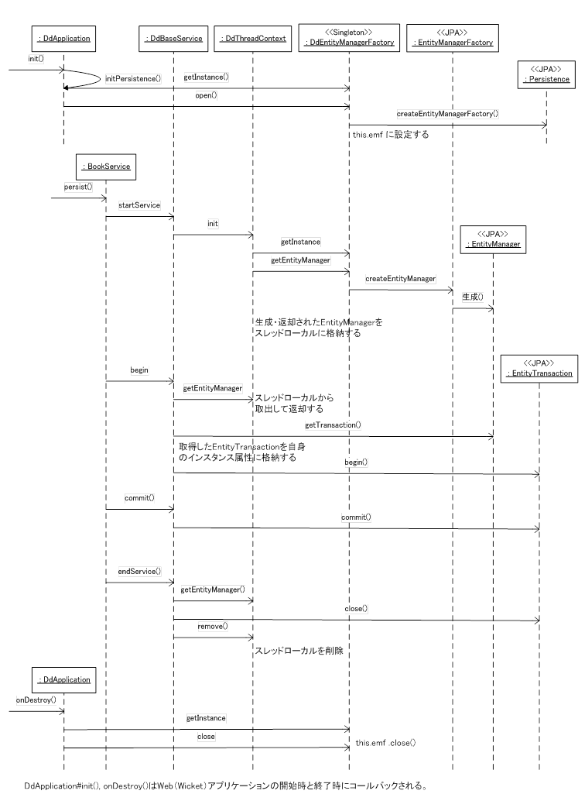
ダウンロードとユーザガイド
 ユーザガイド [PDF] [2.5MB]
ユーザガイド [PDF] [2.5MB]
[OSSへの謝辞]
DDBuilderは次のソフトウェアを利用しています。
・Apache Wicket 7.4.0
・hibernate-entitymanager4.3.6.Final
・Derby10.10.2.0
・log4j2.5
・Eclipse jdt3.9.1
[動作確認済みの環境]
・Java 8
・Windows7 pro 32bit/64bit, Windows10 pro 64bit
・Eclipse IDE for Java EE Developers 4.4, 4.3
・Apache Tomcat 7.0, 8.0, 8.5, 9.0
[インストール不要]
インストール／アンインストールは不要です。ダウンロードしたzipファイルを適当な場所に解凍してください。不要になった場合は、 それらをエクスプローラなどで削除してください。
※ ダウンロードしたファイルを解凍すると、次の説明ファイルが含まれています。
「はじめにお読みください(使い方).txt」
「DDBuilder_Guide_Ver2.pdf」
[サポート]
使いはじめ等で、ご不明な点がありましたら「お問合せ」からご連絡ください。 (無料) ネクストデザインの都合で返信が遅くなる場合がありますが、ご了承ください。また、有料でのサポートも別途用意しております。詳しくはお問合せください。
[オープンソースで公開中]
GiHubでオープンソースとして公開しています。 [Apache License Version 2.0]
- DDBuilder (ツール本体)
https://github.com/nextdesign-co-jp/DDBuilder.git
- DDBuildertemplate (テンプレート)
https://github.com/nextdesign-co-jp/DDBuilderTemplate.git
[目次に戻る]DDDの学習にも有効
DDBuilderは、DDDの入門、学習にも役立ちます。 学習のためにドメインモデルを作成しても、ドメインモデルを動かすまでに時間がかかってしまい、ドメインモデリングに集中できなくなることがあります。 しかし、DDBuilderを活用すれば、すばやく動かしてみることができます。 実際にドメインモデルを実装して、具体的に動かしてみれば、ドメインモデルの役割や位置づけが理解しやすくなります。 机上だけで、DDDを理解することは、簡単ではありません。 ドメインがアプリケーションの本質であるという考え方や、ドメインモデルを中心にした開発方法、イテレーティブな開発についても理解しやすくなるでしょう。